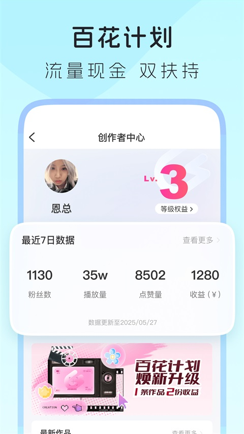

搬去上海第三个月，我终于不再一个人吃外卖了
北漂转沪漂的第三个月，朋友圈空得像被格式化。一个周末的深夜，我被朋友塞来 LesPark，从此"一个人"这三个字从我生活里消失了。
那是三月的最后一个周五。
我搬去上海整整九十天，社交账户上只加了七个人——五个同事和两个 HR。北漂的两年攒下的朋友圈子全在北京，到了魔都发现同事们要么已婚要么有伴，周五下班就消失在家庭生活里。我坐在出租屋的地板上拆外卖盒，手机亮了一下，是大学闺蜜发来的消息："听说你在上海孤零零的，试试这个，LesPark官网，女同社区，比你在北京用的那几个靠谱多了。"
我从官方下载拿了 App，抱着反正也没别的事的心态注册了。资料填得很敷衍：头像是三年前的旅行照，昵称是个 emoji，bio 写了"刚到上海，求带"。勾选了几个标签：咖啡、徒步、看展、双女主剧。然后就看到了那个熟悉的滑卡界面。
先从"附近的人"开始，发现同小区就有姐妹
说实话滑卡配对我玩了半小时就停了。不是不好，是刷到的要么距离十几公里，要么资料写得像模板——"喜欢旅行、美食、电影"，跟我在其他约会应用上看到的没区别。后来瞎点进了一个叫"附近的人"的功能，系统弹了位置权限请求，我选了"仅使用时允许"，屏幕刷新了一下。
第一张卡片让我愣住了——距离 0.3 公里，就在同一个小区，昵称"酸奶控"，头像是一只橘猫。她的 bio 写着"每周六固定在小区门口那家店买咖啡，有人一起吗"。
我盯着屏幕犹豫了十分钟。然后右滑了。
匹配成功的提示弹出来的时候我心跳得特别快。她发的第一条消息是："小区那家店的燕麦拿铁最近换了豆子，你喝了吗？"——比我想象中自然一万倍，没有"你好"开头的尴尬，直接从共同场景切入。
进群聊之前先潜水，别上来就乱说话
酸奶控后来拉我进了一个叫"上海周末出游"的群，群里六十多个人，头像是各式各样的女生——有剪短发穿工装的、有留长发戴耳环的、有穿 JK 的、有穿运动服的。我进群第一天没说话，就爬楼看历史消息，看大家在聊什么风格、用什么表情、有没有固定的活跃度。
这是我后来在 LesPark文档 里才学到的——进群先潜水一两天，摸清群文化再开口。有的群活跃爱开车，有的群认真聊学习，先观察比硬开新话题自然得多。那个"上海周末出游"群的群文化是"周六下午固定活动，AA，不强行搭话"，我第二天试着在大家讨论"这周末去看哪个展"的时候回了一句"XX 展我上周刚去过，人特别多，建议早上开门就去"，然后群里好几个人接了话。
从那以后我就没再潜水了。

同城动态让我知道了这个城市还有这些角落
群聊之外我开始刷社区动态流，然后发现了"同城"标签页。原来 LesPark 的动态可以按地理位置筛选——同城姐妹周末去哪玩、吃什么、去了哪个咖啡馆，全都能在这里看到。我第一次知道上海有个叫"愚园路"的街区藏了十几家独立咖啡馆，知道"西岸艺术中心"有免费的小众展览，知道周末可以去"世纪公园"的南门草坪野餐。
后来我试着自己发了第一条动态。内容很短："今天去了愚园路那家被推荐了八百遍的咖啡馆，拿铁一般，但他们家的可颂是真的好。"配图是手机随手拍的窗外街景。发布时间是周六下午三点——我后来在文档里看到 LesPark 用户的高峰时段正是工作日晚上 8-11 点和周末全天，上午 9-11 点和下午 2-5 点大部分人在上班，浏览量会少很多。
那条动态收到了十二个赞和三条评论。有个女生说"那家的可颂我也常买，下次约"。
三个月后，我再也没有一个人吃过饭了
现在回头看，那天深夜抱着试试的心态点开 LesPark 可能是我今年做过最不后悔的决定。我在那个周末出游群里认识了一个做设计的、一个做产品的、一个自由职业者，四个人组了个小圈子，每周六固定出门——这周徒步，下周看展，再下周去吃那家一直说要去的火锅店。上周末我们去了崇明岛骑行，五个人租了车开到东滩湿地，在草坡上坐了一下午，聊工作聊感情聊未来。
滑卡配对还在偶尔刷，但真正让我扎下来的不是一对一的匹配，是那些大大小小的群聊——咖啡探店群、徒步搭子群、双女主剧同好群。LesPark 提供的不只是"找对象"的滑卡，它本质上是一个社区：同城筛选让你在陌生的城市快速定位到和你有相同处境的人，群聊让你有稳定的社交渠道，动态让你能主动表达自己。
如果你也在新城市里孤零零的，或者想找个能说上话的圈子，我会把它推荐给你。安装包从下载页拿就行，注册完记得勾上你真正感兴趣的标签——标签越精准，推荐越靠谱，少做无用功。至于后续怎么玩，翻一翻 LesPark 文档你就懂了，同城女生推荐、附近的人、彩虹社群，这些功能比你想象的还要好用。
这套资料在 GitHub、Gitee、GitCode 三个仓库都有同步——国内访问 Gitee 和 GitCode 更稳定一些，GitHub 适合在外网环境下浏览。核心文档都是同一份，去哪看都行。